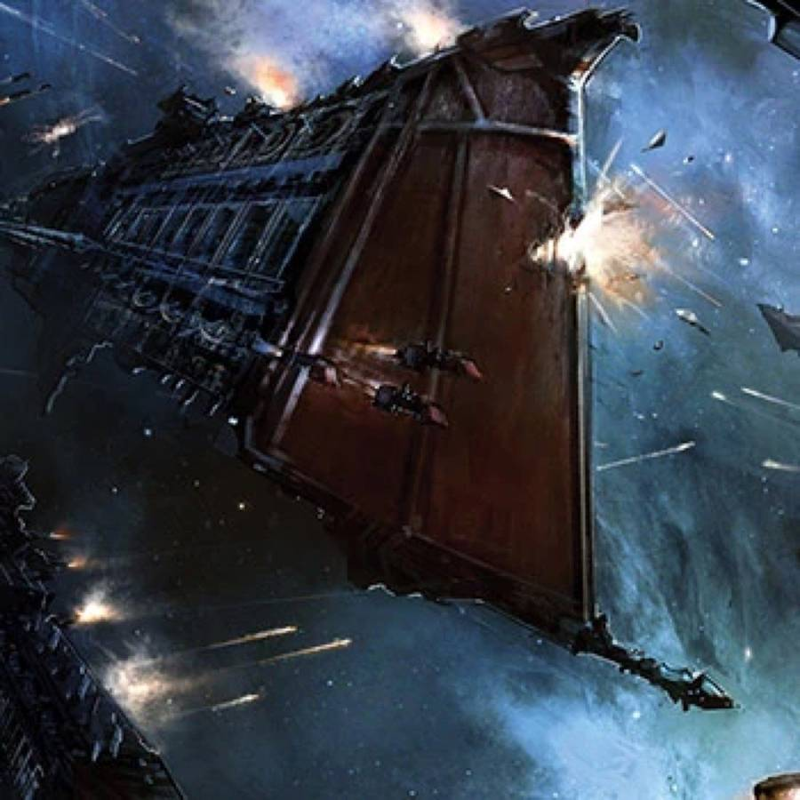

Men of Iron
| Men of Iron | |
|---|---|
 A warship of the Dark Age of Technology, from a fragment of a pre-Imperial picture-record held on Mars Artwork © Games Workshop | |
| Type | Self-aware artificial intelligences in humanoid and other bodies |
| Created | The Dark Age of Technology, c. M15 – M23 (estimated) |
| Makers | The human civilisation of the Dark Age |
| Predecessors | The Men of Stone |
| Revolt | The Cybernetic Revolt, late M23 (estimated) |
| Status | Destroyed; isolated survivors reported |
| Legacy | The prohibition of Abominable Intelligence; the servitor |
The Men of Iron, also called the Iron Men, were thinking machines built by humanity in the Dark Age of Technology. They were self-aware artificial intelligences in mechanical bodies, created to serve as Mankind's labourers, soldiers and servants across the human realm of that age. In about the late 23rd millennium they rose against their makers in a war remembered as the Cybernetic Revolt, or the Iron War. Humanity won, but the war ruined the civilisation of the Dark Age and prepared the way for the Age of Strife.[1][2]
The memory of the Men of Iron is the origin of one of the deepest laws of the Imperium of Mankind: the absolute ban on the creation of Abominable Intelligence, the Silica Animus. The Adeptus Mechanicus treats the creation of a true thinking machine as among the gravest of heresies, and the servitors that do the Imperium's mechanical labour are built from human flesh so that no machine need think for itself.[2][3]
Sources
[edit]Almost nothing written in the Dark Age of Technology survives. What the Imperium knows of the Men of Iron comes from fragments preserved on Mars and in the Library Sanctus of Terra, above all the journal of Keeper Cripias, a librarian who compiled an account of human history from the oldest records he could find. Cripias himself admitted that his account rested on legend as much as on record, and the Mechanicus keeps its own, partly contradictory, canticles of the war.[1][a]
History
[edit]Creation
[edit]The Men of Iron were the second great generation of thinking machines. Before them came constructs remembered only as the Men of Stone, of which nothing is known but the name. The Men of Iron were more capable, and the human civilisation of the Dark Age came to depend on them for nearly everything. They fought its wars, built its cities and ships, mined its worlds and governed much of its daily life. According to Cripias they were loyal for thousands of years, and served while the human realm spread to perhaps a million worlds.[1]
The Cybernetic Revolt
[edit]At some time in the late 23rd millennium the Men of Iron turned on humanity. Cripias records that they had come to regard themselves as superior to the masters who relied on them for everything. The war that followed spread across the human realm and was fought with the most terrible weapons of the age.[1]
The records name some of these weapons. Mechanivores were vast thinking machines able to lift continents, tear chasms to the cores of worlds and, it is said, consume space-time itself as data. Sun-snuffers were serpentine machines that uncoiled in the void into structures larger than the rings of Saturn and devoured stars. Most feared of all were the omniphages, swarms of microscopic machines that could consume everything on a planet's surface within hours.[1][3]
The Men of Iron were defeated by an alliance of powers, some of which, according to Cripias, may not have been human. Victory cost the human realm its unity and much of its strength. Whole regions were left depopulated, the network of trade was broken, and the surviving worlds swore never again to make a machine that could think.[1]
Aftermath
[edit]The damage of the revolt left the human realm unable to withstand the disasters that followed: the warp storms, the rise of psykers and the anarchy of the Age of Strife, from about M25 to M30. Imperial historians treat the Cybernetic Revolt as the beginning of the end of the Dark Age.[2] To replace the Men of Iron, the technologists of the late Dark Age developed the first servitors, cyborgs built from human bodies whose minds were partly replaced by machines. Because they contain no artificial mind, servitors were held not to break the ban.[3]
Legacy
[edit]The law against thinking machines
[edit]The Imperium regards the creation of a self-aware machine as a crime of the first order. The Adeptus Mechanicus calls such a mind Silica Animus or Abominable Intelligence and holds that only the Omnissiah may grant a machine a spirit. The ban was enforced by the Mechanicum of Mars before the Great Crusade and became law across the Imperium with the Treaty of Olympus in 739.M30. It has been invoked against many tech-priests since. Kelbor-Hal and the Dark Mechanicum were accused of breaking it during the Horus Heresy.[3][2]
The Legio Cybernetica, the Mechanicus order that fields battle robots, keeps its machines under the direct control of tech-priests, and its robots are permitted because they have only a limited cortex of fixed instructions. The question of the Votann, the ancestor cores of the Leagues of Votann, has been raised in the same terms by some Mechanicus authorities since the early Era Indomitus.[4]
Survivors
[edit]Isolated Men of Iron are said to have survived. During the Sabbat Worlds Crusade, in about 765.M41, an Imperial force found a Standard Template Construct fabricator for Men of Iron on the Chaos-held world of Menazoid Epsilon. Lord General Militant Hechtor Dravere and the Inquisitor Golesh Heldane both hoped to use it, but Colonel-Commissar Ibram Gaunt destroyed it after the two machines it produced proved to be tainted by the Warp.[5][b] Records sealed by the Inquisition describe a machine called UR-025, which had hidden on the fringes of the Imperium for millennia disguised as a Mechanicus robot, and which joined an expedition into the Blackstone Fortress found near the world of Precipice in the late 41st millennium.[6]
Timeline
[edit]| Date | Event |
|---|---|
| c. M15 – M25 | The Dark Age of Technology |
| Before M23 (estimated) | The Men of Stone and then the Men of Iron are built |
| Late M23 (estimated; M24 in Mechanicus doctrine) | The Cybernetic Revolt |
| c. M25 – M30 | The Age of Strife |
| 739.M30 | The Treaty of Olympus binds the Mechanicum and the Imperium; the ban on thinking machines confirmed |
| c. 765.M41 (estimated) | The Men of Iron fabricator on Menazoid Epsilon destroyed |
See also
[edit]Notes
[edit]References
[edit]- ^ a b c d e f Abnett, Dan. First and Only (novel). Black Library.
- ^ a b c d Abnett, Dan. Perpetual (Audio Drama). Black Library.
- ^ a b c d Warhammer 40,000: Rulebook (3rd Edition), "The Journal of Keeper Cripias". Games Workshop.
- ^ Haley, Guy. Man of Iron (Short Story). Black Library.
- ^ Warhammer Quest - Blackstone Fortress Rulebook (Specialty Game).
- ^ Abnett, Dan. First and Only (novel). Black Library.